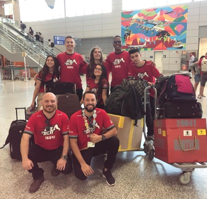

About me

I'm Gustavo, a student of Computer Science on the University of Pelotas.
Through the years, i have participated on a lot of robotics competitions and scienc fairs, while mastering my social skills, as the habilit to comunicate and work in group and my professional skills, as Front-end or Back-end. I love to develope new solutions to problems and to code.
Download my CV